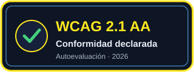

Contenido principal
Declaración de accesibilidad
Esta declaración describe el compromiso de accesibilidad de Galaxia Star Wars, el estado de conformidad con las Pautas de Accesibilidad para el Contenido Web (WCAG) 2.1 en su nivel AA, las medidas adoptadas y las limitaciones conocidas.
Compromiso
El equipo mantiene este sitio de forma voluntaria y trabaja para que todas las personas puedan usar sus contenidos, con independencia de sus capacidades o de la tecnología de asistencia que utilicen. El objetivo declarado es cumplir el nivel AA de WCAG 2.1 (WAI-AA).
Estado de conformidad
- Nivel objetivo
- WCAG 2.1, nivel AA (WAI-AA).
- Estado declarado
- Totalmente conforme con WCAG 2.1 AA.
- Método
- Autoevaluación realizada por el propio equipo, con herramientas automáticas y revisión manual. No se trata de una auditoría de terceros.
- Fecha
- 2026.
Medidas adoptadas
Compatibilidad
- Navegadores
- Chrome, Firefox, Edge y Safari en sus versiones recientes.
- Tecnologías de asistencia
- Lectores de pantalla como NVDA, JAWS y VoiceOver.
- Tecnologías usadas
- HTML5, WAI-ARIA, CSS, Bootstrap, Tailwind y jQuery.
Limitaciones conocidas
Evaluación
La evaluación combina herramientas automáticas (pa11y y el análisis de axe/ Lighthouse), una revisión manual de la estructura y el contraste, y pruebas con el lector de voz integrado.
Comentarios y contacto
Si encuentras una barrera de accesibilidad, puedes escribir al equipo del proyecto en equipo.galaxia@example.com. Es una dirección de ejemplo sin datos personales; el equipo revisa los mensajes durante el desarrollo del trabajo de clase.
Certificación

Este distintivo es una declaración propia del equipo que indica el nivel de conformidad declarado (WCAG 2.1 AA). No es una certificación emitida por un tercero ni el resultado de una auditoría externa.
Licencia
- Código
- Publicado bajo la licencia GNU GPL v3.0. Consulta LICENSE y NOTICE.
- Marca
- Star Wars y todos los nombres relacionados son marcas de Disney/Lucasfilm; este sitio es un trabajo educativo sin ánimo de lucro y no está afiliado a ellos.
Fecha de la última revisión
2026.